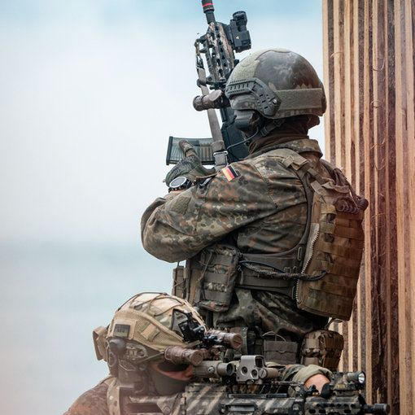

BEAMTE & SOLDATEN
MIT SICHERHEIT IM RECHT
Disziplinarrecht | Soldatenrecht | Beamtenrecht | Strafrecht
Die Anwaltskanzlei für Frauen und Männer in Uniform
BEAMTE
RECHTSSCHUTZ
Rechtsanwalt Abeßer unterstützt bei drohender Entlassung oder Zurruhesetzung. Er bietet professionelle Hilfe im Disziplinar- und Strafverfahren. Sachlich fundiert, konsequent, unabhängig von der Schwere des Tatvorwurfs und in allen Instanzen. Sein Schwerpunkt liegt auf der Beratung und Verteidigung von Beamten der Polizeien des Bundes und der Länder sowie der Sicherheitsbehörden und Nachrichtendienste.

SOLDATEN
RECHTSSCHUTZ
Rechtsanwalt Abeßer verteidigt Zeit- und Berufssoldaten im Wehrdisziplinarrecht, im „zivilen“ Strafverfahren sowie bei drohender Entlassung. Ob vor der Wehrdisziplinaranwaltschaft, dem Truppendienstgericht oder vor den Strafgerichten: Mit Sachkenntnis, Augenmaß und Durchsetzungskraft wird etwaiges Fehlverhalten ins rechte Licht gesetzt, um den Fortbestand des Soldatenverhältnisses zu sichern.

RECHTS-
GEBIETE
DISZIPLINARRECHT
Verteidigung im behördlichen und gerichtlichen Disziplinarverfahren.
In jeder Instanz. Auch als Zeugenbeistand.
SOLDATENRECHT
Verteidigung im Wehrdisziplinarverfahren. Beistand bei Entlassung. Eilrechtsschutz und Klagen.
BEAMTENRECHT
Anwaltliche Vertretung in Entlassungs- und Zurruhesetzungsverfahren. Für Beamte auf Widerruf, Probe und Lebenszeit.
STRAFRECHT
Alle Tatvorwürfe. Konsequente Verteidigung. Immer mit Blick auf das Disziplinarrecht.